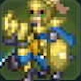

平民移動 4
通用 · 步兵
- 考試
- 不適用
- 解鎖
- 初始基礎兵種。
- 精通
- 戰鬥的基本（15）

| 兵種 | 移動 | 系統 · 類型 | 考試條件 | 訓練加成 | 兵種特技 | 精通 |
|---|---|---|---|---|---|---|
| I · 基礎 | ||||||
| 平民 | 4 | 通用 · 步兵 | 不適用 初始基礎兵種。 |
無 | 戰鬥的基本（15） | |
| 貴族 | 4 | 通用 · 步兵 | 不適用 初始基礎兵種。 |
無 | 戰鬥的基本（15） | |
| II · 初級 | ||||||
| 鬥士 | 4 | 鬥士系 · 步兵 | 劍術/斧術/格鬥術任一項 D，初級考試票證×1 | 劍術+1、斧術+1、步兵術+1 | 攻擊的基本（30） | |
| 獵兵 | 4 | 獵兵系 · 步兵 | 劍術/弓術任一項 D，初級考試票證×1 | 劍術+1、弓術+1、步兵術+1 | 狩獵的基本（30） | |
| 士兵 | 4 | 士兵系 · 重裝 | 斧術/槍術任一項 D，初級考試票證×1 | 槍術+1、斧術+1、重裝術+1 | 防衛的基本（30） | |
| 飛鴕兵 | 5 | 飛行系 · 騎兵 | 槍術/斧術任一項 D，且馬術 E+，初級考試票證×1 | 槍術+1、馬術+1、飛行術+1 | 乘降術 | 攻勢的基本（30） |
| 詛咒師 | 4 | 魔道系 · 步兵 | 黑魔術/白魔術任一項 D，初級考試票證×1 | 黑魔術+1、白魔術+1 | 魔道的基本（30） | |
| III · 中級 | ||||||
| 劍客 | 5 | 鬥士系 · 步兵 | 劍術 C，中級考試票證×1 | 劍術+2、步兵術+1 | 戰技裝備+1、劍必殺+3 | 技巧精湛（60） |
| 土匪 | 5 | 鬥士系 · 步兵 | 劍術/斧術任一項 C，中級考試票證×1 | 斧術+2 | 戰技裝備+1、斧命中+3 | 重整態勢（60） |
| 鬥拳手 | 5 | 鬥士系 · 步兵 | 格鬥術 C，中級考試票證×1 | 格鬥術+2、步兵術+2 | 戰技裝備+1、格鬥迴避+3 | 攻擊&遠離（60） |
| 弓箭手 | 5 | 獵兵系 · 步兵 | 弓術 C，中級考試票證×1 | 弓術+2、步兵術+1 | 戰技裝備+1、弓命中+5 | 狀態不錯（60） |
| 惡棍 | 5 | 獵兵系 · 步兵 | 劍術/弓術任一項 C，中級考試票證×1 | 劍術+1、弓術+1、步兵術+2 | 戰技裝備+1、開鎖、探索術 | 暗影隱身（60） |
| 重裝步兵 | 4 | 士兵系 · 重裝 | 槍術/斧術任一項 C，且重裝術 E+，中級考試票證×1 | 槍術+1、斧術+1、重裝術+2 | 戰技裝備+1、後攻防守+3 | 大反擊（60） |
| 輕騎兵 | 6 | 士兵系 · 騎兵 | 劍術/槍術任一項 C，且馬術 E+，中級考試票證×1 | 槍術+1、馬術+2 | 乘降術 | 體力強化（60） |
| 戰車兵 | 5 | 士兵系 · 騎兵 | 弓術 C 且馬術 D，中級考試票證×1 | 弓術+2、馬術+1 | 戰車裝甲、戰車兵的戰術、戰車兵之道 | 突擊態勢（60） |
| 騎甲駝兵 | 6 | 飛行系 · 騎兵 | 槍術/斧術任一項 C，且馬術 D，中級考試票證×1 | 槍術+1、斧術+1、馬術+1、飛行術+1 | 乘降術 | 威脅察覺（60） |
| 天翼兵 | 6 | 飛行系 · 飛行 | 劍術/槍術任一項 C，且飛行術 E+，中級考試票證×1 | 劍術+1、槍術+1、飛行術+2 | 乘降術 | 天馬的護翼（60） |
| 薩滿巫師 | 5 | 魔道系 · 步兵 | 黑魔術 C+，中級考試票證×1 | 劍術+1、黑魔術+2、白魔術+1 | 黑魔術的探究、魔法命中+3 | 技巧咒縛（60） |
| 牧師 | 5 | 魔道系 · 步兵 | 白魔術 C+，中級考試票證×1 | 格鬥術+1、黑魔術+1、白魔術+2 | 白魔術的探究、魔法回覆+5 | 信仰心（60） |
| IV · 上級與高級 | ||||||
| 侍道 | 5 | 鬥士系 · 步兵 | 劍術 B 資料未列額外解鎖任務；以當前考試列表為準。 |
劍術+3、槍術+1、步兵術+2 | 戰技裝備+2、劍必殺+5 | 殘心（100） |
| 舞者 | 待核對 | 通用 · 步兵 | 劍術／弓術任一項 B 蕾達篇第9章起完成「舞者的繼承人」，使用舞姬的首飾。第一部為蕾達專用；救世篇開放給其他角色。 |
劍術+3、弓術+2、步兵術+4 | 戰技裝備+2、跳舞 | 特別舞蹈（100） |
| 勇士 | 5 | 鬥士系 · 步兵 | 劍術／斧術／格鬥術任一項 B 資料未列額外解鎖任務；以當前考試列表為準。 |
劍術+2、斧術+3、格鬥術+2、步兵術+1 | 戰技裝備+2、斧命中+5、格鬥命中+5 | 熟練之技（100） |
| 狙擊手 | 5 | 獵兵系 · 步兵 | 弓術 B 資料未列額外解鎖任務；以當前考試列表為準。 |
弓術+3、步兵術+2 | 戰技裝備+2、弓命中+10 | 射擊專家（100） |
| 森林騎士 | 6 | 獵兵系 · 騎兵 | 弓術 B、馬術 D 資料未列額外解鎖任務；以當前考試列表為準。 |
劍術+1、弓術+2、馬術+2 | 乘降術、戰技裝備+1、弓命中+5 | 獵人之眼（100） |
| 遊俠 | 5 | 獵兵系 · 步兵 | 劍術／弓術任一項 B 迪托利希篇名聲 Lv10 的挑戰書；或蕾達篇「我想製作並推出新商品4」。 |
劍術+2、弓術+2、步兵術+3 | 戰技裝備+2、開鎖、上級探索術 | 反擊射擊（100） |
| 巨型重甲兵 | 4 | 士兵系 · 重裝 | 槍術／斧術任一項 B、重裝術 D 資料未列額外解鎖任務；以當前考試列表為準。 |
槍術+2、斧術+2、步兵術+1、重裝術+3 | 戰技裝備+2、後攻防守+5 | 集中反擊（100） |
| 重裝騎兵 | 待核對 | 通用 · 重裝 · 騎兵 | 槍術／斧術任一項 B、馬術 D、重裝術 F 賽奧朵拉篇對應戰備增援。 |
尚未收錄 | 乘降術、戰技裝備+1、後攻防守+3 | 大盾（100） |
| 榮光騎士 | 6 | 士兵系 · 騎兵 | 劍術／槍術任一項 B、馬術 C 資料未列額外解鎖任務；以當前考試列表為準。 |
劍術+2、槍術+2、斧術+1、馬術+3 | 乘降術、戰技裝備+2 | 聖盾（100） |
| 神鴕兵 | 6 | 士兵系 · 騎兵 | 黑魔術 B、馬術 D 凱伊篇卡司托爾指導 Lv7／「來自父親的秘密委託」。 |
劍術+1、槍術+2、斧術+2、黑魔術+2、馬術+1、飛行術+1 | 乘降術、黑魔術的探究、戰技裝備+1 | 馳騁（100） |
| 馭龍兵 | 6 | 飛行系 · 飛行 | 槍術／斧術任一項 B、飛行術 C 凱伊篇奧羅拉指導 Lv8／「來自母親的特別委託」；賽奧朵拉篇也可通過對應戰備增援開放。 |
劍術+1、槍術+1、斧術+3、飛行術+3 | 乘降術、戰技裝備+1 | 突破圍城（100） |
| 先知 | 5 | 魔道系 · 步兵 | 黑魔術 B 資料未列額外解鎖任務；以當前考試列表為準。 |
劍術+2、格鬥術+1、黑魔術+3、白魔術+1、步兵術+1 | 黑魔術的探究、魔法命中+5 | 速度咒縛（100） |
| 主教 | 5 | 魔道系 · 步兵 | 白魔術 B 資料未列額外解鎖任務；以當前考試列表為準。 |
斧術、格鬥術、黑魔術、白魔術、步兵術 | 白魔術的探究、魔法回覆+10 | 結界（100） |
| 遊唱詩人 | 6 | 魔道系 · 騎兵 | 黑魔術／白魔術任一項 B、馬術 D 凱伊篇貝爾特蘭指導 Lv10／「白髮鬼的委託」；蕾達篇酒館興行「我想製作並推出新商品4」。 |
黑魔術+3、白魔術+3、馬術+2 | 乘降術、魔法回覆+5、魔法命中+3 | 勇氣的咒歌（100） |
| 衛士 | 5 | 士兵系 · 步兵 | 槍術 B 迪托利希篇名聲 Lv6 的挑戰書；或賽奧朵拉篇對應戰備增援。 |
槍術+3、白魔術+1、步兵術+1 | 戰技裝備+2、魔法回覆+10 | 緊繃神經（100） |
| V · 最上級 | ||||||
| 刀劍將領 | 5 | 鬥士系 · 步兵 | 劍術 A 第三部第二區分起，完成戰神的委託。 |
尚未收錄 | 戰技裝備+3、劍必殺+7 | 名稱待核對（精通經驗130） |
| 戰鬥將領 | 5 | 鬥士系 · 步兵 | 劍術／斧術／格鬥術任一項 A | 劍術+2、斧術+4、格鬥術+2、步兵術+1 | 戰技裝備+3、斧命中+7、格鬥命中+7 | 戰鬼一擊（130） |
| 武僧 | 5 | 鬥士系 · 步兵 | 格鬥術 B、白魔術 D 第三部第二區分起，完成奧羅拉的委託。 |
格鬥術+4、白魔術+2、步兵術+2 | 戰技裝備+3、白魔術的探究、格鬥迴避+7 | 強打&治癒（130） |
| 宗師射手 | 5 | 獵兵系 · 步兵 | 弓術 A | 弓術+4、步兵術+2 | 戰技裝備+3、弓命中+15 | 飛空獵手（130） |
| 探影者 | 5 | 獵兵系 · 步兵 | 劍術／弓術任一項 A | 劍術+2、弓術+3、步兵術+4 | 戰技裝備+3、開鎖、最上級探索術 | 落影之刃（130） |
| 聖槍師 | 5 | 士兵系 · 步兵 | 槍術 A | 槍術+4、白魔術+3、步兵術+1 | 戰技裝備+3、魔法回覆+10、白魔術的探究 | 不退架勢（130） |
| 要塞 | 4 | 士兵系 · 重裝 | 槍術／斧術任一項 A、重裝術 C | 槍術+2、斧術+2、步兵術+1、重裝術+4 | 戰技裝備+3、後攻防守+7 | 阻絕（130） |
| 奧利哈鐵騎 | 7 | 士兵系 · 騎兵 | 劍術／槍術任一項 A、馬術 B | 劍術+2、槍術+3、斧術+1、馬術+4 | 乘降術、戰技裝備+3 | 騎士烈槍（130） |
| 聖天翼兵 | 7 | 飛行系 · 飛行 | 劍術／槍術任一項 A、飛行術 C | 劍術+3、槍術+3、飛行術+4 | 乘降術、戰技裝備+1、飛行迴避+7 | 迅雷風烈（130） |
| 飛龍將領 | 7 | 飛行系 · 飛行 | 槍術／斧術任一項 A、飛行術 C | 劍術+1、槍術+3、斧術+3、飛行術+4 | 乘降術、戰技裝備+2 | 襲擊（130） |
| 德魯伊 | 5 | 魔道系 · 步兵 | 黑魔術 A | 劍術+2、格鬥術+2、黑魔術+4、步兵術+1 | 黑魔術的探究、魔法命中+7 | 魔防咒縛（130） |
| 賢者 | 5 | 魔道系 · 步兵 | 白魔術 A | 斧術+1、格鬥術+2、白魔術+4、步兵術+1 | 白魔術的探究、魔法回覆+15 | 魔力掌控（130） |
| VI · 神將 | ||||||
| 刃輝神將 | 6 | 鬥士系 · 步兵 | 劍術至少 S，妖刀之鍔×1 | 劍術+5、槍術+1、步兵術+2 | 戰技裝備+3、劍必殺+10 | 戰神（160） |
| 神樂神將 | 6 | 鬥士系 · 步兵 | 劍術 A 且弓術 C，穆薩首飾×1 | 劍術+4、弓術+2、步兵術+5 | 戰技裝備+3、跳舞 | 神舞（160） |
| 永霸神將 | 6 | 鬥士系 · 步兵 | 劍術/斧術/格鬥術任一項 S，決裁天秤×1 | 斧術+5、劍術+3、格鬥術+3、步兵術+1 | 戰技裝備+3、斧命中+10、格鬥命中+10 | 武神（160） |
| 破拳神將 | 6 | 鬥士系 · 步兵 | 格鬥術 S 且白魔術 C，大帝腰封×1 | 格鬥術+5、白魔術+3、步兵術+3 | 戰技裝備+3、白魔術的極限、格鬥迴避+10 | 神裝（160） |
| 絕禍神將 | 6 | 獵兵系 · 步兵 | 劍術/弓術任一項 S，暗之結晶×1 | 弓術+4、劍術+2、步兵術+5 | 戰技裝備+3、開鎖、超級探索術 | 神命（160） |
| 嵐槍神將 | 6 | 士兵系 · 步兵 | 槍術至少 S，三叉戟×1 | 槍術+5、白魔術+3、步兵術+1 | 戰技裝備+3、魔法回覆+10、白魔術的極限 | 神壁（160） |
| 烈駿神將 | 8 | 士兵系 · 騎兵 | 劍術/槍術/斧術任一項 S，且馬術 A，神鐵之鞍×1 | 劍術+3、槍術+3、斧術+3、馬術+5 | 乘降術、戰技裝備+3、黃金騎術 | 神技（160） |
| 聖轉神將 | 6 | 魔道系 · 步兵 | 黑魔術/白魔術任一項 S，轉世蓮華×1 | 黑魔術+5、白魔術+5、劍術+2、格鬥術+2、斧術+1、步兵術+1 | 戰技裝備+3、全魔術的極限、魔法命中+10、魔法回覆+20 | 神法（160） |